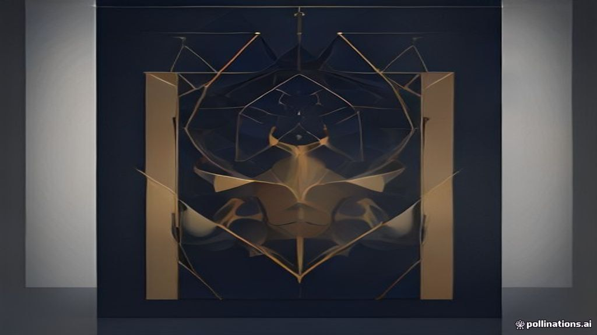

Latest insights
Personal-finance explainers, market briefs, F&O positioning and business stories — all in one place.
India's Biggest Stock Exchange Just Listed: What NSE's Debut on BSE Means
The National Stock Exchange (NSE), India's largest stock exchange, listed its shares on the Bombay Stock Exchange (BSE) on September 24, 2026. This was a majo.
SEBI's New ₹25 Lakh PRIM Route: A Mutual Fund Alternative
SEBI has introduced the Portfolio Managers Route for Investing in Mutual Funds (PRIM), offering a new avenue for high-net-worth investors. Under PRIM, SEBI-re.
Death Certificate India: Registration, Documents, and Delayed Rules
A death certificate is a mandatory legal document required for managing post-demise financial and legal affairs. Timely registration of a death, ideally withi.

Market Wrap — 25 September 2026
Indian benchmark indices, Nifty 50 and Bank Nifty, ended the session with modest gains. Global cues, particularly optimism around AI in US markets, provided a.
Pre-Market Brief — 25 September 2026
Global markets presented a mixed picture overnight, with US indices largely flat, Asian markets mostly lower, and Nikkei a notable outlier with gains. GIFT Ni.
Nifty Earnings Estimates: Weak Rupee's Net Positive Impact
Nifty earnings estimates for FY27 are perceived as ambitious by financial analysts, including Nuvama's Prateek Parekh. Despite the high expectations, a weaker.
Your Digital Rupee Just Got a Push: What Finance Minister Nirmala Sitharaman Said
Finance Minister Nirmala Sitharaman recently urged the RBI to speed up the adoption of India's Digital Rupee (e₹). The Digital Rupee is India's own digital cu.
Delayed Property Papers? Get ₹5,000/Day from Lender
The Reserve Bank of India (RBI) mandates lenders to return original property documents within 30 days of loan repayment. This rule applies to personal loans, .
Second Home Loan: 3 Questions Before You Take the Plunge
Securing a second home loan in India is possible, but requires careful financial planning and lender approval. Your ability to comfortably manage two EMIs is .
Market Wrap — 24 September 2026
Indian equities witnessed a sharp decline across the board, with Nifty 50 falling over 1.6%. Rising US bond yields, higher crude prices, and domestic regulato.
Pre-Market Brief — 24 September 2026
Global markets closed mixed to negative, with US indices down and Asian markets showing a mixed trend. GIFT Nifty is signalling a cautious to negative start f.
India F&O Pulse — 24 Sep 2026: what the day's options & futures positioning is whispering
End-of-day reading of India's F&O open interest, PCR, max pain and FII positioning — explained simply.
Your Bank and NBFC Team Up: Understanding Co-Lending
Banks and Non-Banking Financial Companies (NBFCs) are now working together more closely to offer loans. This partnership, called co-lending, helps expand who .
Gold Steadies: How Iran Talks Influence the Fed Rate Path and Your Portfolio
Global gold prices stabilised recently as discussions between the US and Iran showed progress. These diplomatic talks could potentially lead to increased oil .
Form 141 for TDS: Understanding the New Challan-cum-Statement
Form 141 is a new unified challan-cum-statement introduced under the Income Tax Act 2025 to simplify TDS compliance. It combines the payment of Tax Deducted a.
Market Wrap — 23 September 2026
Indian benchmark indices, Nifty 50 and Bank Nifty, closed higher for the day, extending their positive run. Rising US Treasury yields and a stronger dollar ac.
Pre-Market Brief — 23 September 2026
Global markets presented a mixed picture overnight, with Asian indices showing divergence, while US market data was unavailable. GIFT Nifty is signalling a po.
India F&O Pulse — 23 Sep 2026: what the day's options & futures positioning is whispering
End-of-day reading of India's F&O open interest, PCR, max pain and FII positioning — explained simply.
Your Digital Life Just Got a Boost: Understanding India's Push for Digital Public Infrastructure
India is investing more in Digital Public Infrastructure (DPI), which are shared digital systems. DPI includes familiar tools like Aadhaar for identity and UP.
Demystifying MDR: UPI vs. Debit and Credit Card Charges
Merchant Discount Rate (MDR) is a fee merchants pay to banks and payment processors for accepting digital payments. The National Payments Corporation of India.
8th Pay Commission: Understanding OPS vs NPS for Government Employees
The upcoming 8th Pay Commission is reigniting the debate between the Old Pension Scheme (OPS) and the National Pension System (NPS). Government employee and p.
Market Wrap — 22 September 2026
Indian equities closed lower today, with benchmark indices Nifty 50 and Bank Nifty shedding around 0.4%. Selling pressure towards the close, coupled with sust.
Pre-Market Brief — 22 September 2026
Global markets show a mixed picture, with strong gains in US tech stocks overnight but a subdued opening in Asian markets this morning. GIFT Nifty is signalli.
India F&O Pulse — 22 Sep 2026: what the day's options & futures positioning is whispering
End-of-day reading of India's F&O open interest, PCR, max pain and FII positioning — explained simply.
India's Spending Abroad: Understanding the Current Account Deficit
India's Current Account Deficit (CAD) widened to $7 billion in July 2026. This means India spent more foreign currency than it earned from trade and other tra.
IPO Report Card: 30 to 60 Days After Listing — September 2026
Out of 40 IPOs that listed between 30 and 60 days ago, 27 companies are currently trading above their initial issue price. 13 companies are currently trading .

Emerging Markets Face Headwinds: Capital Outflows Explained
Developed markets are tightening monetary policy, making their assets more attractive to global investors. This shift in capital is causing funds to flow out .

NRI Property Sale in India: Understanding Different TDS Rules
When a Non-Resident Indian (NRI) sells property in India, the buyer must deduct Tax Deducted at Source (TDS) at specific rates. These TDS rates for NRIs are s.
Market Wrap — 21 September 2026
Indian equities saw a mixed session, with benchmark indices Nifty 50 and Bank Nifty closing marginally higher. Midcap and Smallcap indices, however, ended the.
Pre-Market Brief — 21 September 2026
Global markets presented a mixed picture overnight, with US indices flat to positive, while Asian markets largely traded in the green. GIFT Nifty indicates a .
Upcoming IPOs, Explained Simply — September 2026
Five companies, National Stock Exchange of India Limited, Sonaselection India Limited, Kheria Autocomp Limited, SpectraA Technology Solutions Limited, and Axi.
India F&O Pulse — 21 Sep 2026: what the day's options & futures positioning is whispering
End-of-day reading of India's F&O open interest, PCR, max pain and FII positioning — explained simply.
EPFO Confirms Your EPF Interest Rate for FY 2025-26: What It Means for Your Savings
The Employees' Provident Fund Organisation (EPFO) has confirmed the 8.25% interest rate for your EPF account for the financial year 2025-26. This rate ensures.
Kuku Technologies IPO: What SEBI's Nod Means for Investors
Kuku Technologies has received approval from SEBI to launch its Initial Public Offering (IPO). The company previously filed its confidential draft IPO papers .
Unlimited Health Insurance: What to Check Before You Buy
The term 'unlimited health insurance' often refers to high sum insured plans, not truly limitless coverage. Policy exclusions define specific conditions or tr.

Analysing Market Trends: Implications for HDFC Bank, Adani Ports, JSW Steel
Indian benchmark indices exhibited mixed performance, with Sensex slightly down and Nifty showing a modest gain. A notable factor influencing current market s.
Your Share Trades Just Got Faster: Understanding the T+1 Settlement Cycle
When you buy or sell shares, the actual exchange of shares and money isn't instant; it happens later, in a process called settlement. India's stock market now.

Investing via RBI Retail Direct: Understanding UPI MDR Changes
The Reserve Bank of India's Retail Direct platform allows individuals to directly invest in government securities (G-Secs) using UPI. Merchant Discount Rate (.
Gold vs Nifty 50: Post-Tax Returns on ₹1 Lakh Over 20 Years
Over the last two decades, physical gold and Nifty 50 have shown different growth trajectories. Gold's returns are subject to Long Term Capital Gains (LTCG) t.

No Internet? No Problem! RBI Governor Shaktikanta Das Boosts Offline Digital Payments
RBI Governor Shaktikanta Das recently announced expanded rules for offline digital payments. This means you can now make small payments up to ₹500 even withou.

Fed Meeting: Rate Hike, Dot Plot, and Market Impact Explained
The US Federal Reserve (Fed) recently increased its benchmark interest rate to combat persistent inflation. The updated 'dot plot' indicates Fed officials ant.

EPFO Form 10C: Claiming Pension Benefits Explained
EPFO Form 10C is used to withdraw your Employees' Pension Scheme (EPS) contributions or to obtain a Scheme Certificate. You can apply for a Scheme Certificate.

Market Wrap — 18 September 2026
Indian equities closed higher today, with Nifty 50 and Bank Nifty posting modest gains. Midcap and Smallcap indices significantly outperformed, indicating bro.

Pre-Market Brief — 18 September 2026
US markets closed significantly higher, while Asian markets are mostly positive this morning, setting a generally firm global tone. GIFT Nifty is indicating a.

Stock Returns vs. Earnings: Why Profit Growth Isn't Always Enough
Strong profit growth in a company does not automatically guarantee good returns for its shareholders. Stock returns are influenced by both earnings growth and.
India F&O Pulse — 18 Sep 2026: what the day's options & futures positioning is whispering
End-of-day reading of India's F&O open interest, PCR, max pain and FII positioning — explained simply.


How India's ONDC is Changing the Way You Shop Online
ONDC is a government initiative to make online shopping fair and open for everyone. It's not a single app, but a network that connects different buyer and sel.